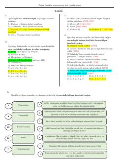

MSTarix fanidan milliy sertifikat test topshiriqlari va ularning javoblari.
Ushbu qo‘llanma tarix fanidan milliy sertifikat imtihonlari uchun mo‘ljallangan namunaviy test topshiriqlari va ularning javoblarini o‘z ichiga oladi. Material abituriyentlar va o‘quvchilarga tarix fanidan bilimlarini sinovdan o‘tkazish hamda imtihonlarga tayyorgarlik ko‘rishda yordam beradi.